雁埠 · 章家村
《上虞雁埠章氏宗谱》谱内村史辑录 · 民国十四年（乙丑）星聚堂木活字本 · 十六卷 · 十三册
引文均据原影像逐字核录，标「★」者为调原图肉眼核读
引文均据原影像逐字核录，标「★」者为调原图肉眼核读
〇、先破一个前提：谱里没有「章家村」三个字
全谱十三册，「章家村」三字 0 处。谱里的正式村名叫 雁埠，也写作「雁埠邨」；
行政上属 九都八里。今日俗称的"章家村"，是外人因其村中章氏独盛而叫出来的。
但「章家」作为地名前缀，谱里是有的：
| 谱中地名 | 出处 | 说明 |
|---|---|---|
| 章家渡 | 册09 卷十三 p115–116 | 「虞西雁埠有章家渡者」——即雁埠渡，又名 章家義渡 |
| 章家廟 | 册09 卷十二 p115 | 「義渡有亭在章家廟左側」——村中庙宇，以章氏冠名 |
| 章家嶺 | 册09 卷八 p55 | 始祖太傅公仔鈞「齋戒夜登章家嶺，焚香祈天以卜吉凶」——浦城祖地山名 |
| 章家埠 | 册03 卷五上 | 族女「適章家埠口」——上虞章镇旧名（他处） |
| 章邨 / 章家 | 册10 卷十四 p78 | 「遇全城耆舊談及全城事蹟，輒曰章邨章家，吾族也」 |
而村内一切公共建筑，谱中一律记作「在九都八里村东塘上」「在九都八里塘外大通口」「九都八里章」。
一、村的位置与形胜（谱内原话）
1. 卷一〈序〉—— 最经典的一段村貌白描（册01 p4 ★）
始寧之西，迤邐五十餘里，面山襟江，有邨曰雁埠，烟竈稠密，聚族而居於此者不止一姓，何獨章氏戸口爲最繁、人材爲最盛，食舊德服先疇，繩繩繼繼爲最久而最長。
——册01 卷一 p4，何紹聞〈序〉
就雁埠論，已洵乎爲我邑巨族矣。
始祖奎文公澹泊其心，高尚其志，承累世簪纓，不喜繁囂，退居僻壤，擇雁埠爲廬墓之鄉，歌於斯、哭於斯，世世相傳。 ——同上
始祖奎文公澹泊其心，高尚其志，承累世簪纓，不喜繁囂，退居僻壤，擇雁埠爲廬墓之鄉，歌於斯、哭於斯，世世相傳。 ——同上
2. 卷十四〈傳〉—— 地理与江患（册10 p66 ★）
世居虞西雁埠，地瀕娥江下游，江水數數爲患，居民不得〔安枕〕。
——册10 卷十四 p66〈章三畏公傳〉
3. 水乡实景：塘、渡、团、墙
| 项 | 谱内原文 | 出处 |
|---|---|---|
| 雁埠塘 | 「嘗於雁埠塘上出己資建永濟路亭」 | 册10 卷十四 p76 ★ |
| 雁埠渡 | 「竊身村地臨濱江，耕讀爲業，緣有雁埠渡，南通會稽東關塘角，北達崧鎮，行人不息」 | 册10 卷十六 p110 ★ |
| 雁埠团 | 「乾隆三十五年奉徐場主清丈雁埠團沙地」 | 册10 卷十六 p114 ★ |
| 官塘/沙墙 | 「出縣西門上百官塘，迤邐西北行至雁埠，有亭翼然」 | 册10 卷十四 p77 ★ |
二、章氏与村：为什么外人叫它"章家村"
1. 姓不止一姓，独章氏最盛（册01 p4 ★）
聚族而居於此者不止一姓，何獨章氏戸口爲最繁、人材爲最盛、食舊德服先疇繩繩繼繼爲最久而最長。
——册01 卷一 p4
2. 始迁祖奎文公择居于此，迄今八百余年
- 卷首〈序〉：「始祖奎文公……退居僻壤，擇雁埠爲廬墓之鄉」
- 卷末〈跋〉（册10 p150 ★）：「吾章氏自唐康州刺史及公，至九世孫宋嘉祐丁酉狀元衡公，生宣教郎奎文公，始遷上虞雁埠，迄今八百餘年，厯宋元明清，迭遭兵燹，舊譜蕩然。」
- 卷一舊序：「國文簡公世居浦城，逮宣教郎奎文公由浦城徙上虞雁埠。」
3. 世居雁埠，族大支繁，各立家庙（册09 卷十三 p121 ★）
吾族自始祖奎文公遷虞以來，世居雁埠，族大支繁，各立家廟，世守先祀，勿敢失墜。
——册09 卷十三 p121，光緒二十二年助田碑記
4. 村内的房派与四座宗祠
村内章氏分 老房 · 安房（甯支、朝支）· 相房 · 聰房 · 和三房，共立四座宗祠，各置祀产（卷十三〈祠產〉）：
| 祠堂 | 祠产 / 图 |
|---|---|
| 雁埠老房支宗祠 | 有祀产亩分字号；卷一图目有〈雁埠老房支祠堂圖〉 |
| 雁埠安房甯支宗祠 | 有祀产亩分字号；有〈雁埠安房甯支祠堂圖〉 |
| 雁埠安房朝支宗祠 | 有祀产亩分字号；有〈雁埠安房朝支祠堂圖〉 |
| 雁埠相聰和三房宗祠 | 有祀产亩分字号；祀产记「九都八里章 · 章道九公祭 · 雁莊承糧」；有〈雁埠相聰和三房祠堂圖〉 |
与你家直接相关：受田公一支属「相房 · 道九公下 · 泰一公子 · 炫二公俊支派」——即相房，
正是村内四祠之一「相聰和三房宗祠」所辖。
三、村里的公共建筑与事业（卷十二〈營建〉· 卷十三〈義渡〉）
| 建筑 / 事业 | 谱内原文（节录） | 出自 |
|---|---|---|
| 節孝坊 | 「在九都華澤口，爲謝安人建」 | 册09 卷十二 p109 |
| 節孝碑亭 | 「在九都華澤口，爲何安人建……年二十二歸章門，逾年而夫亡，矢志守貞撫繼子崑玉……光緒二年仲秋」 | 册09 卷十二 p110 ★ |
| 越蔭公所 | 「在本邨珠字一千四百號地五分六釐七毫五絲……顏其額曰越蔭，內設掩埋、水龍兩舉，壬寅冬邑令儲家藻頗嘉之，爲撰徵信錄序」 | 册09 卷十二 p110 ★ |
| 永濟亭 | 「在九都八里村東塘上，清光緒十七年星齋公獨建，并置田二十畝零入縣志；此田於宣統二年稟請前令恩苞批准，變價易浙路股，移充濟美小學經費」 | 册09 卷十二 p112 ★ |
| 小康亭 | 「在九都八里塘外大通口，清光緒十八年壬辰麟鳳公獨建」 | 册09 卷十二 p112 ★ |
| 大沙牆 | 「咸豐七年知縣劉書田與連仲愚先生商水利，仲愚先生用三畏公議創修臨江大牆，閏五月興工九月竣事，東與後郭辰字號接壤，西與呂家埠莫字號接壤，工長三千六百丈」 | 册09 卷十二 p112 ★ |
| 新築沙牆 | 「牆身坍塌者增高一倍、增廣兩倍……知縣儲家藻兩詣江干督視頗嘉許」 | 册09 卷十二 p113 ★ |
| 義渡 | 「邑志所載章家義渡無創辦年月……讀朱懋政先生〈章家義渡記〉而知是渡之創設爲咸豐十年……渡之田產有四十餘畝……停泊所南爲稽東塘角，北爲虞西雁埠；義渡有亭在章家廟左側」 | 册09 卷十二 p115–116 ★ |
| 義塚 | 「光緒十七年間奉撫憲撥欵辦理餘上兩縣掩埋，分設義塚二十三處……生等經理章陸村義塚收埋檢骨」 | 册10 卷十六 p112 ★ |
| 始祖墓 | 「我始遷祖奎文公墓，相傳在本村前麻地，代遠年湮，碑殘字沒，莫可……」 | 册09 卷七墓圖 p31 ★ |
| 正宗菴 | 「道九墓在正宗菴面前麻地」——村中庵堂 | 册01 卷一 p147 |
义渡告示原文（册10 卷十六 p110–112 ★）
爲呈叩示禁事：竊身村地臨濱江，耕讀爲業，緣有雁埠渡，南通會稽東關塘角，北達崧鎮，行人不息。
該渡前係就地居民農船過渡，常有刁難勒索之情事。年前有故耆人章長慶倡意欲設義渡，因獨力難支，
邀集某等公捐公辦，至去年約有成數，捐置珠字號田叁拾餘畝，立雁埠義渡，戶承糧，製造渡船一隻，
日夜雇人撑駛，按月給發工食，毋論遠近客商概不准收取分文。
——董事章耀山等呈，咸豐九年十一月十七日；上虞縣胡示
四、村的风气：耕读传家、急公好义、清季兴学
竊身村地臨濱江，耕讀爲業。
——册10 卷十六 p110
迨宣教公徙居雁埠，縱不逮從前之盛，然皆知詩書之爲重，故無論爲科舉時代、爲學校時代，
而舉鄉遊庠、畢業及被選爲議員者亦不無人在焉。
——册09 卷九〈選舉考〉開篇
當時鄉間鄙塞，非若今有學校之教育。公閔邨童失學，爲家設帳以課之，而風氣漸移。
——册10 卷十四 p69，記洪楊亂後設塾課村童
〔創〕虞西第一小學於里中，繼則就家創虞西女校，後乃與同志設教育〔會〕。
第一小學校及女校以推廣學務，父頷之，爲助五百金。 ——册10 卷十四 p71
第一小學校及女校以推廣學務，父頷之，爲助五百金。 ——册10 卷十四 p71
清咸豐辛酉，洪楊擾及虞西，公爲捍禦計，虛與委蛇，里閭賴以靖。
他如議脩祠廟、及設義渡、管沙塘事，屬公益雖勞瘁不辭。
——册10 卷十四 p69
五、村的地利与灾患：江潮、沙地、沙墙
1. 沙地与「雁埠团」的赋役 —— 章氏独占（册10 卷十六 p114–116 ★）
清乾隆三十五年奉徐場主清丈雁埠團沙地。明時先祖章大輔、章輈、章振維、鄭美四戶，
各在金山場認糧，名曰官丁，每一官丁應納稅銀五錢四分四釐。
——册10 卷十六 p114
吾族丁地由來久矣……惟雁埠團分內外十戸：內戸二百七官丁，外戸二百七官丁，共四百十四官丁，
每一官丁約地三十畝，納稅銀五錢四分四釐。
——册10 卷十六 p116〈丁地考〉
| 认粮户 | 官丁 |
|---|---|
| 章大輔 | 66 官丁 |
| 章輈 | 10 官丁 |
| 章振維 | 1 官丁又 5.97 毫 |
| 鄭美（外姓） | 9 官丁 |
四户共 86 官丁余，总地「二千三百畝有奇」。章氏占外姓郑美之外的全部官丁
—— 这就是外人称「章家村」的来历。
2. 潮患与沙墙（册10 卷十四 p74–77 ★）
外保沙地，內護官塘，誠一舉而兩美具焉。己亥夏風潮徒作，百官、梁湖、蒿壩等處官塘潰決，
漂沒田廬牲畜無算，獨雁埠一帶無恙，皆恃此沙牆力。前邑令儲給匾額曰功奏廻瀾。
自有沙牆以來，章氏盡力於此且三世。 ——册10 卷十四 p76–77
自有沙牆以來，章氏盡力於此且三世。 ——册10 卷十四 p76–77
3. 清濬娥江（册09 卷八 p78 ★）
里苦潮患，築隄屢決，公與恆豐金法等獨建議清理娥江，疏通牛角沙，
請瑞五公鳩工興掘，嗣後清理五六次，江通水順，里慶安瀾。
開濬娥江，水勢順下，共慶安瀾；復於庚申興築第二重橫隄，一片海灘草地盡爲膏腴。 ——册09 卷八 p78–79
開濬娥江，水勢順下，共慶安瀾；復於庚申興築第二重橫隄，一片海灘草地盡爲膏腴。 ——册09 卷八 p78–79
4.「近海濱，瞬息滄桑」（册10 卷十六 p117 ★）
近海濱，瞬息滄桑。在先人本古井田之制，寓私於公，化公爲私，法美意良至矣盡矣。
——册10 卷十六 p117〈丁地考〉末
六、"西河沿台门"能在谱里对上什么
谱里没有"章家村"，更没有"西河沿""台门"——因为谱的体例不记民居。
· 「西河沿」全谱 0 处；「台門／臺門」全谱 0 处。
· 谱例只记祠、庙、庵、亭、坊、墙、渡、冢这些公共建筑，且一律系于"九都八里"某字号地；民居、宅门一概不入谱。
· 最接近的一处是册04「墓在西華廟西首河沿」——那是墓址，属他支。
· 「西河沿」全谱 0 处；「台門／臺門」全谱 0 处。
· 谱例只记祠、庙、庵、亭、坊、墙、渡、冢这些公共建筑，且一律系于"九都八里"某字号地；民居、宅门一概不入谱。
· 最接近的一处是册04「墓在西華廟西首河沿」——那是墓址，属他支。
但村的地理与「西河沿台门」完全合拍：
| 你家说的 | 谱里对得上的 |
|---|---|
| 老宅临河 | 「面山襟江」「雁埠塘」「雁埠渡」「江水數數爲患」——娥江下游水乡 |
| 「河沿」 | 谱有「墓在……西首河沿」的用法；又有「潘村河西橋」「在河西潘村小瀝底西」 |
| 「台门」 | 谱不载民居台门，无从对上——只能靠实地 |
| 「章家村」 | 谱称「雁埠」，行政作「九都八里」；因章氏官丁占绝对多数，外人呼为"章家" |
下次回村可问的三件事（能帮你在谱里继续排他）
- 老宅「西河沿台门」属雁埠哪个社 / 字号？（谱内有「湖田三社」「邊墩」「呂家」「施家」等散居点）
- 台门里住的是哪一房（大房/二房……）？谱内四祠分「老房／安房甯支／安房朝支／相聰和三房」，一房一祠。
- 老宅离雁埠塘、雁埠渡（章家渡 / 章家庙）多远？——这两处是谱里唯一能定位到村的坐标。
七、原影像（点开可放大核对）
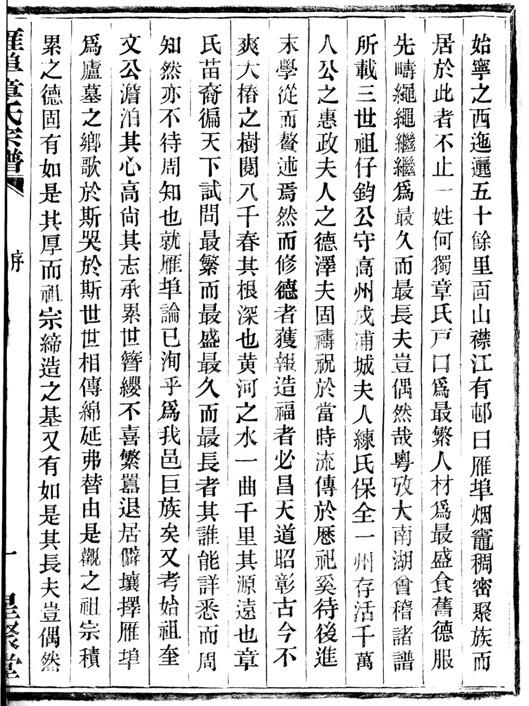
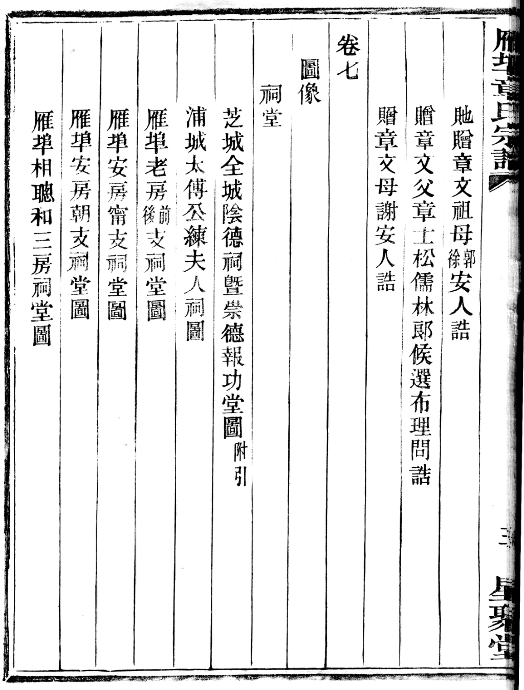
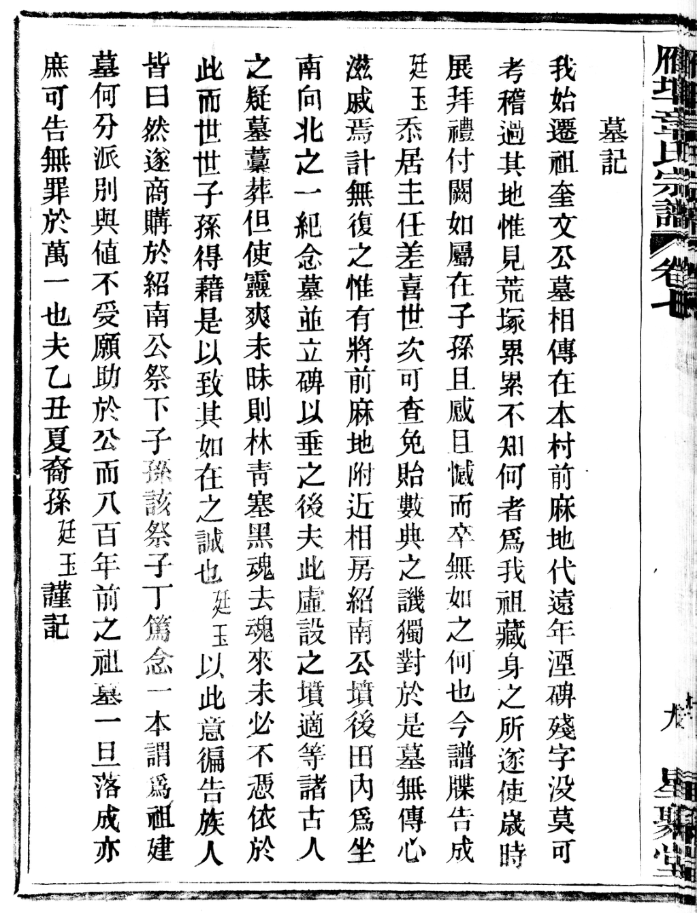
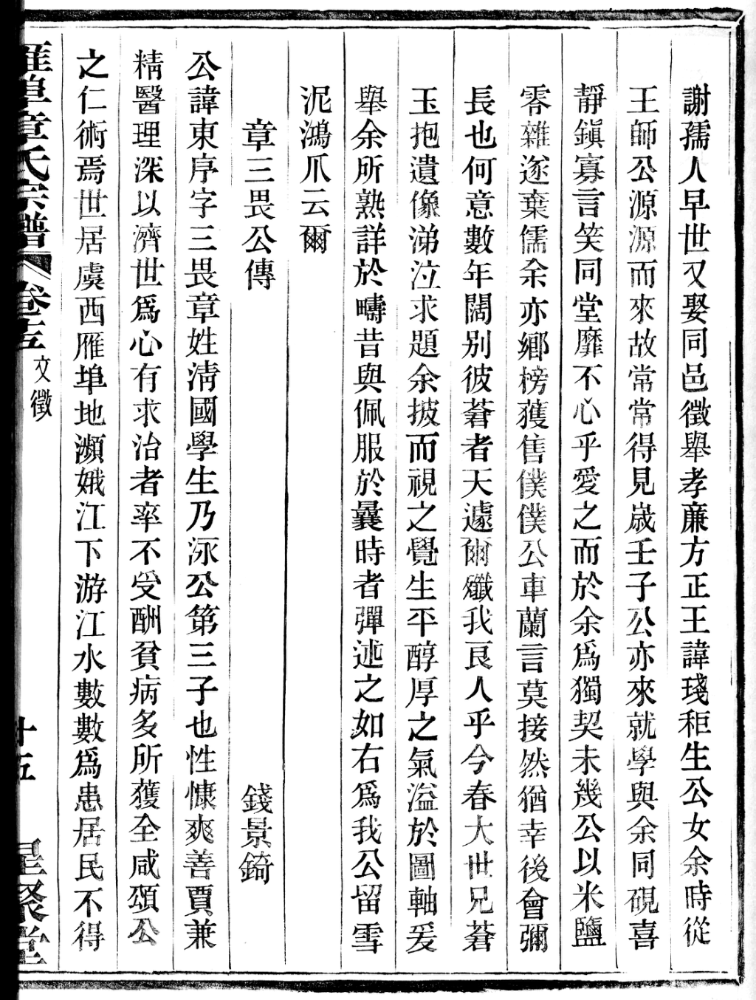
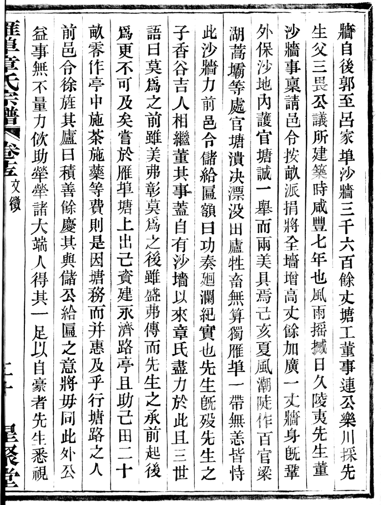
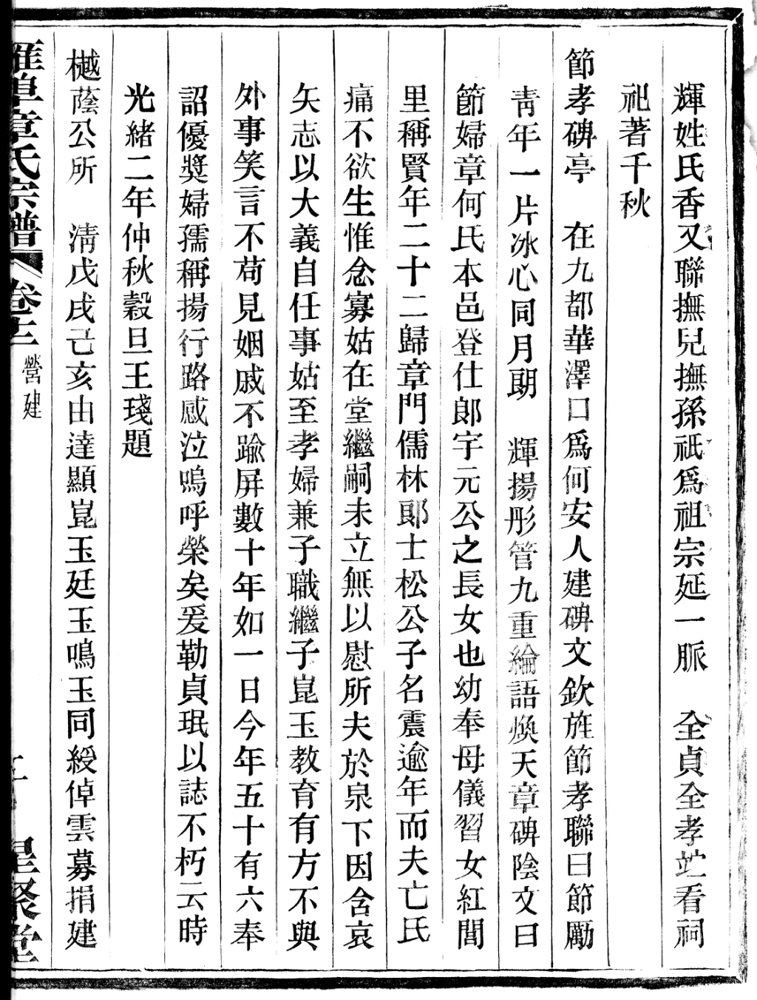
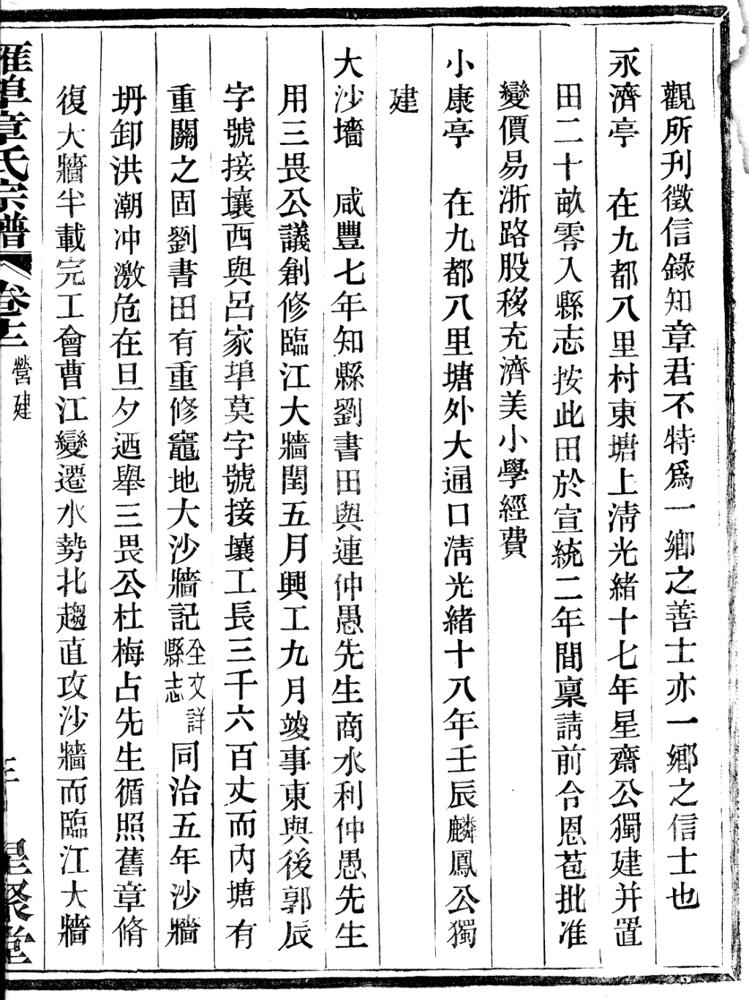
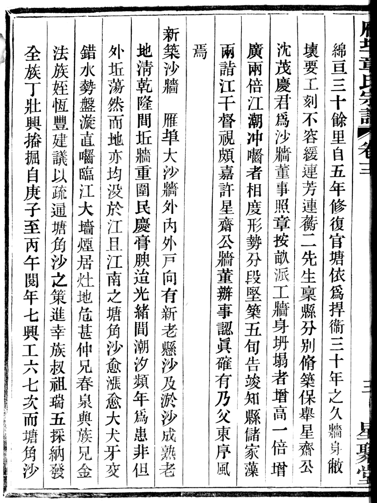
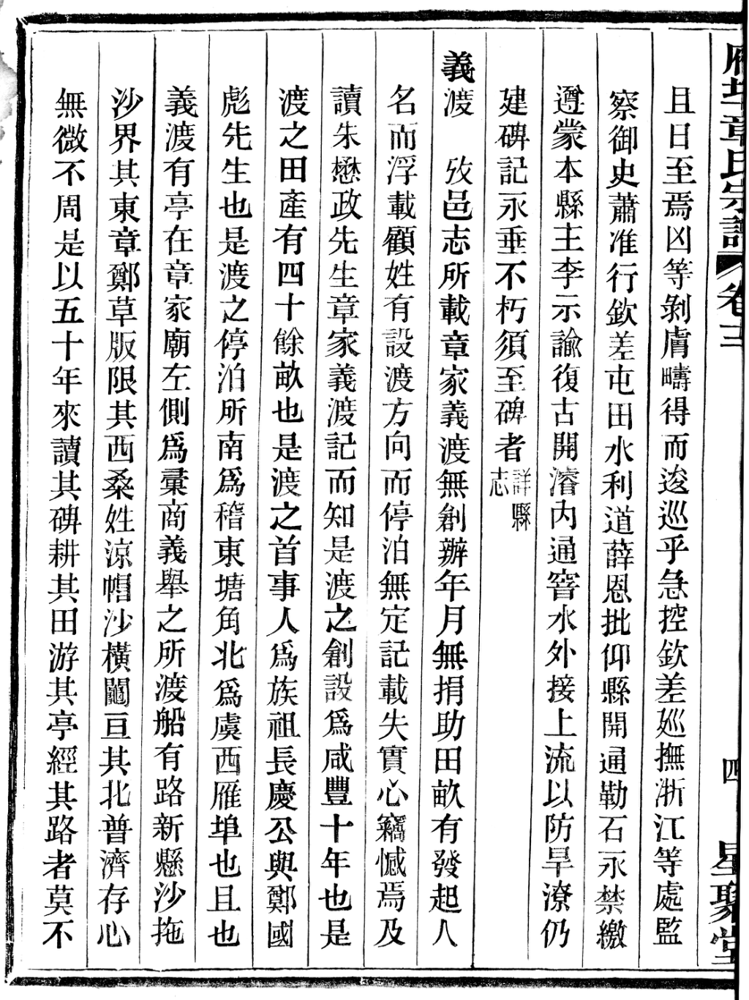
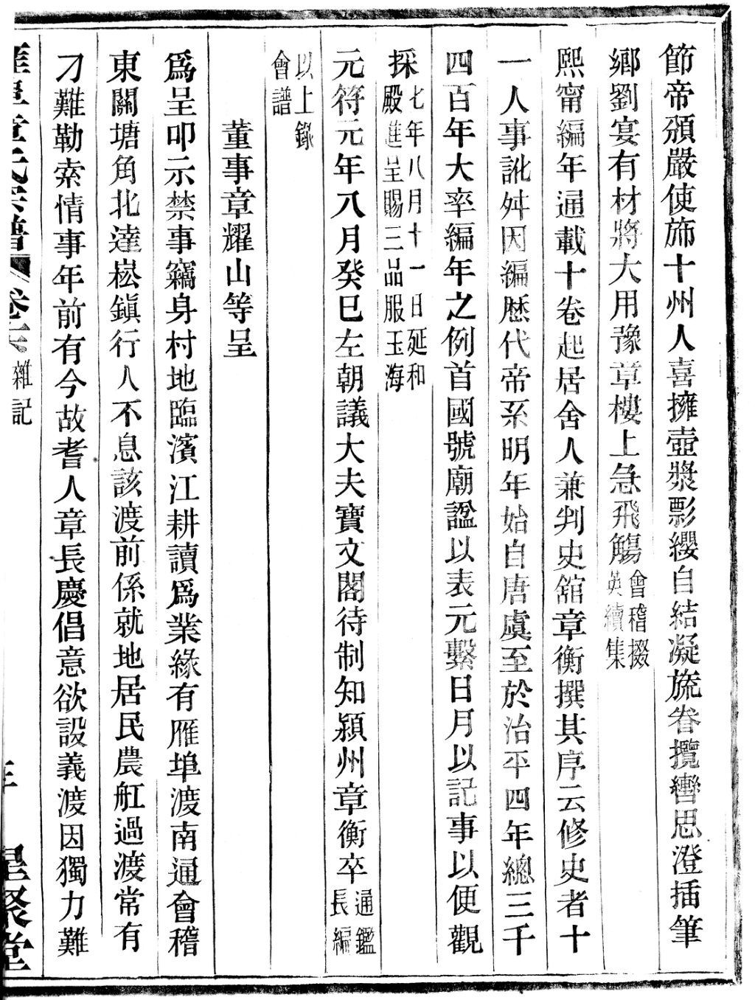
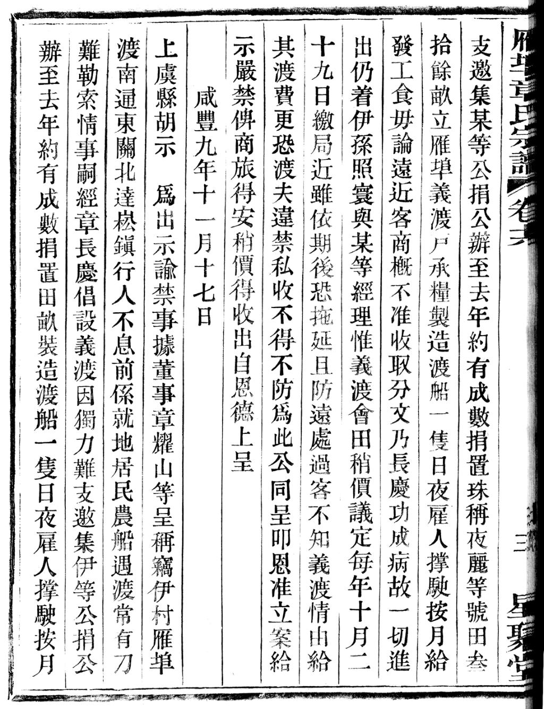

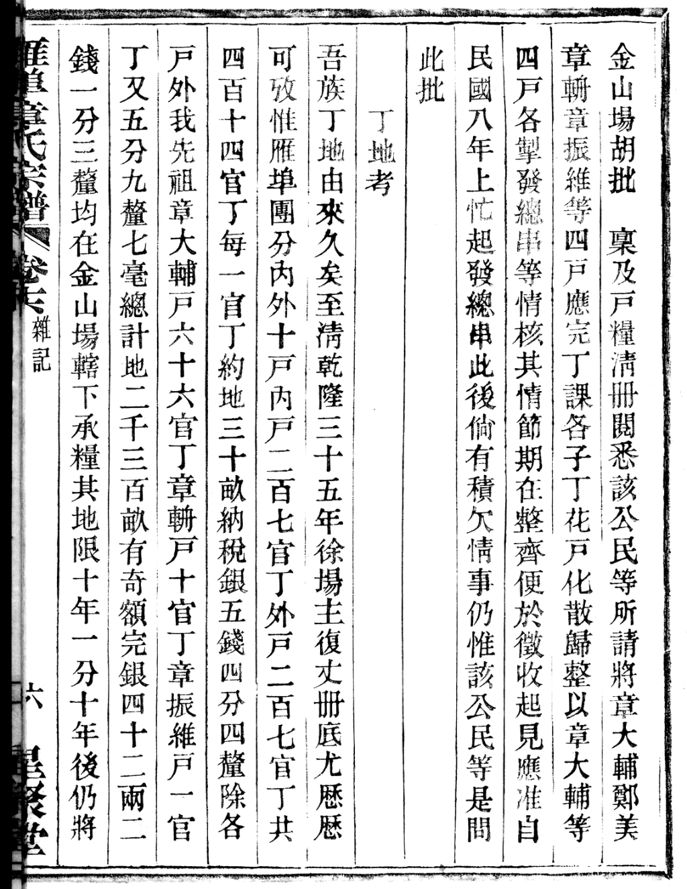